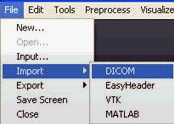
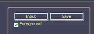

CAVASS Tutorial
MIPG
A.3. How to Import and Export data
DICOM is the format in which data are obtained from the scanner. However, in order to work on the data they need to be converted into native CAVASS data format (IM0 file). The following procedure will teach you how to import your DICOM files into CAVASS.
To start a new project, do one of the following:
Choose File > Import > DICOM

Then Click on Input on Lower right corner.
.
The name of the selected DICOM files will be displayed. Click on Open. It also displays the number of slices the output IM0 will have.
Next, type the name of the output file (without extensions) and the place where it should be saved then click on Save.